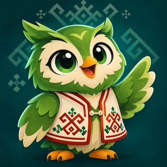

Пуры кечӹ, друг! 👋
Учи горномарийские слова через короткие упражнения!
Работа над ошибками
Кырык Мары • Горномарийский язык
❤️ 5
ПЕРЕВЕДИ СЛОВО
Горномарийская озвучка
🏆
Молодец!
0ОПЫТ
0/5ОТВЕТЫ
📚 Темы курса
100 мини-уроков по горномарийскому в 10 разделах. Каждое занятие — 5 вопросов; слова повторяются для закрепления.
Ученик
🌿 Изучаю горномарийский0XP
0УРОКОВ
0ДНЕЙ
Мой аккаунт
Создать профиль
Прогресс сохраняется на этом устройстве.
Источники словаря
Дополнительные слова взяты из NorthEuraLex (Johannes Dellert и соавторы, 2020) и списка Dellert-2017-1016 в Concepticon (List, Tjuka, Blum и соавторы). Слова сгруппированы по темам и приведены к единому написанию. Лицензия CC BY 4.0.
northeuralex.org · concepticon.clld.org/contributions/Dellert-2017-1016